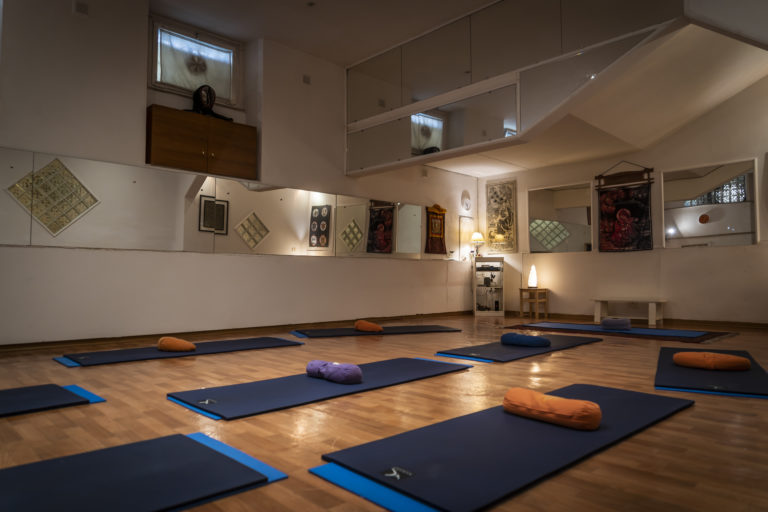
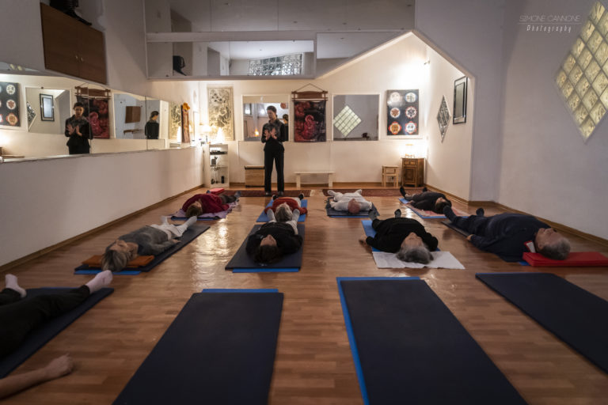

Ti va di riscoprire quella piacevole sensazione di padronanza e leggerezza, sia fisica che mentale?
La nostra missione è diffondere l'armonia e l'equilibrio nel mondo.
Affinché ciò accada, si deve iniziare da sé stessi.
Il nostro insegnante, Lauretana Trevisi, lo rende possibile grazie alla sua esperienza pluriennale nel metodo Feldenkrais,
oltre che nello Yoga e nel Reiki.
Grazie al suo rigore, e allo stesso tempo accoglienza e pazienza, porta gradualmente alla riscoperta di sé, e delle proprie capacità.
Gli insegnamenti appresi nei corsi sono fondamentali nella vita di tutti i giorni, facendoci riscoprire la leggerezza, la semplicità,
e l'eleganza con cui è possibile vivere questa breve esistenza.

La sede I, situata a Saracinesco.
Un luogo largo e arioso, perfetto per fare nuove conoscenze.

Un esempio di lezione Feldenkrais di gruppo. L'insegnante dà istruzioni dettagliate sulle posizioni da assumere.
Di che cosa parli esattamente?
Se vuoi iniziare oggi stesso il percorso per cambiare la tua vita, dai uno sguardo qui!
Abbiamo raccolto una lista di domande più comuni, fatte direttamente a Lauretana.
La base
Che cos'è il metodo Feldenkrais?
È un'educazione al movimento che aiuta a migliorare la propria postura, flessibilità, e complessivamente gli schemi neuromotori.
Incoraggia l'adozione di movimenti fluidi e consapevoli, per aumentare la consapevolezza del proprio stesso corpo.
E, viceversa, dalla riscoperta del proprio corpo conseguono tali schemi di moto.
A che cosa serve?
Riduce tensione muscolare involontaria, elimina le posture errate, causate da anni di cattive abitudini,
e riduce o elimina i dolori che ne sono conseguenza.
Migliora l'equilibrio e la coordinazione psicomotoria.
Migliora la percezione di sé stessi, donando confidenza nel moto.
Tutto ciò è il risultato della riunione di corpo e mente.
Non l'ho mai sentito. È così importante?
Si. In effetti è abbastanza diffuso tra gli atleti, che ne fanno uso per migliorare il recupero
a seguito di sforzi, la fluidità dei movimenti, l'autoconsapevolezza.
Questioni tecniche
Quanto tempo per notare cambiamenti?
Alcuni lo notano immediatamente, altri dopo alcune settimane.
Occorre un allenamento propedeutico?
No. I movimenti sono graduali. Man mano si procede a cose più difficili. Il metodo si adatta alle tue abilità.
In che modalità si può apprendere?
In seduta individuale o collettiva.
Nel primo caso si chiama Integrazione Funzionale, ossia un'integrazione delle tue funzionalità corporee: uso dei tocchi gentili per guidare i tuoi movimenti, mentre resti concentrato su di essi.
Nel secondo guido un'intera classe, dandoti istruzioni su come devi effettuare i movimenti, e che cosa accade anatomicamente.
Ora ci sei dentro!
Un consiglio per apprendere velocemente?
Resta concentrato sui movimenti che ti dico di fare.
Comprendi cosa accade alle tue articolazioni e muscoli mentre li compi.
Soprattutto, eseguirli rapidamente non significa necessariamente averli padroneggiati.
Non ti corre dietro nessuno, prenditi il tempo giusto, resta attento.
Quanto spesso occorre praticarlo?
Pochi minuti al giorno fanno una grande differenza.
L'importante è la costanza e mantenere la consapevolezza, quotidianamente: qui e ora.
Può sostituire trattamenti medici?
No. E prima di praticarlo, consiglio di consultare il medico,
in caso tu abbia qualche patologia fisica.
Voglio conoscerti. Dimmi come incontrarci
Posso seguirti in presenza o a distanza.
In fondo alla pagina trovi la posizione su google maps con le mie sedi.
Se hai scelto sessioni individuali, vieni alla Sede II, a Roma.
Se hai scelto sessioni in gruppo, vieni alla Sede I, a Saracinesco.
Se hai scelto sessioni a distanza, assicurati di installare Zoom sul tuo pc.
Appena sei pronto, scrivi un messaggio nel form in fondo alla pagina.